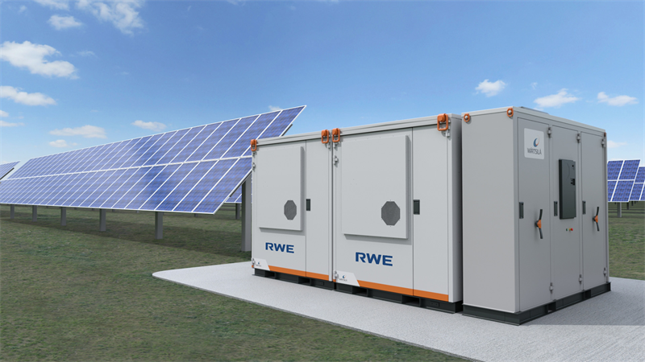

Combines Data Science for Energy, Special Topics in Energy, Electric Transmission Systems coursework + SunStrong VPP work

Building a comprehensive virtual power plant model that integrates optimal power flow analysis with battery placement optimization for residential solar systems. The model uses Python and Julia to solve large-scale optimization problems across transmission networks, identifying optimal locations and sizing for distributed battery storage that maximizes revenue through energy arbitrage, demand response, and grid services.
This project synthesizes coursework from multiple UC Berkeley classes:
The core of the model uses optimal power flow (OPF) formulations implemented in Julia's JuMP optimization framework, combined with Python-based data pipelines for ingesting and processing real-time ERCOT market data. The battery placement optimization considers factors including local load profiles, grid congestion patterns, and time-of-use pricing to identify locations where distributed storage provides the greatest value.
The model incorporates real-world data and constraints from work with SunStrong Management, which manages approximately 500,000 residential solar systems. Revenue streams analyzed include time-of-use arbitrage, demand response participation, capacity market revenues, and aggregated virtual power plant services.